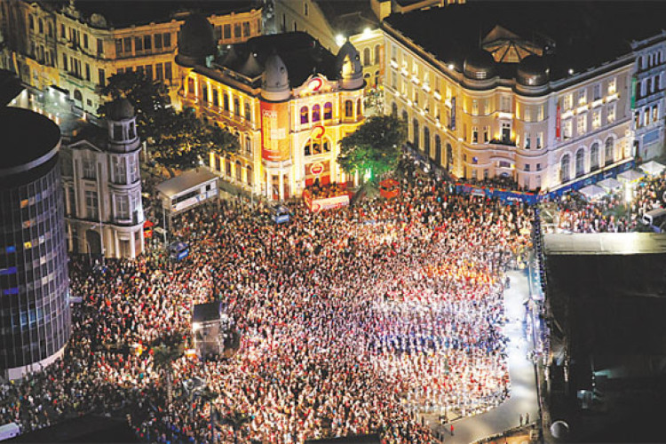

Marco Zero

O Marco Zero do Recife é um local emblemático, situado no coração do bairro do Recife, na capital de Pernambuco. Este ponto histórico não é apenas o coração geográfico da cidade, mas também o ponto de partida para a sua expansão e desenvolvimento desde o século XVI, quando os portugueses estabeleceram-se na região.
Considerado o berço de Recife, o Marco Zero é o local onde a cidade começou a se formar e crescer. O nome “Marco Zero” é uma referência direta ao marco geográfico que simboliza o início da urbanização da cidade, marcando o ponto de origem da capital pernambucana.

Rodeado por uma arquitetura colonial preservada, o Marco Zero é um vibrante centro de encontro para eventos culturais, festivais e atividades sociais. A área proporciona uma vista deslumbrante do porto e é adornada por obras de arte significativas, como a escultura de Francisco Brennand, que enriquecem ainda mais o local.

O Marco Zero é reconhecido como um epicentro cultural em Recife, sediando eventos de grande importância como o Carnaval, um dos mais animados e coloridos do Brasil. Museus e galerias nas proximidades exibem a história e a arte da região, celebrando a rica herança cultural de Pernambuco.
Como um símbolo da identidade de Recife, o Marco Zero representa a resiliência e a evolução da cidade ao longo dos séculos. Ele serve como um ponto de encontro que une moradores e visitantes, relembrando as raízes históricas e promovendo a herança cultural compartilhada. A presença de arte contemporânea reflete a capacidade de Recife de honrar seu passado, mantendo-se sempre de olho no futuro.